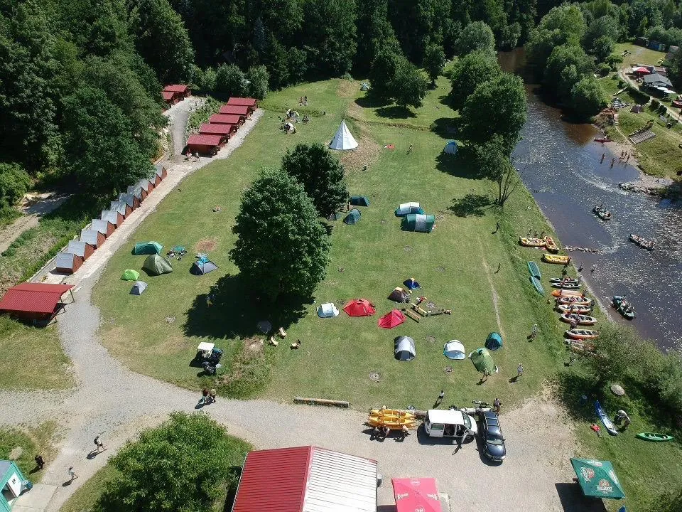
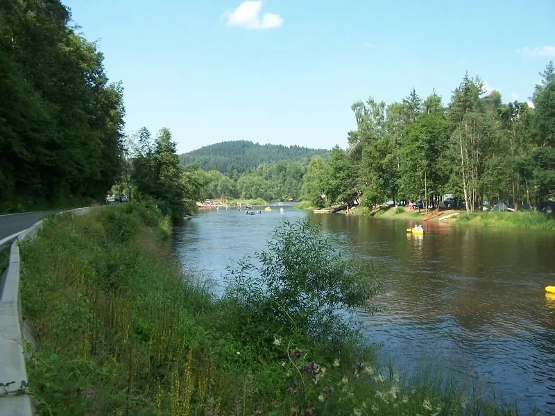

Bootsverleih an der Moldau
Kanus, Rafts und komplette Paddelausrüstung. Wir bringen Sie und die Boote zurück zum Startpunkt – Sie genießen einfach den Fluss.
Wählen Sie Ihr Boot
Hallo! Seit 1993 bietet der Kanu- und Raftverleih PE-LA alles für Ihre Bootstour auf der Moldau in Südböhmen. Wir organisieren Familien-, Schul- und Firmenausflüge.




Im Camp schlafen, morgens aufs Wasser.
PE-LA hat seinen Sitz direkt im Kemp Krumlov an der Moldau – dem Campingplatz, der dem Zentrum von Český Krumlov am nächsten liegt. Übernachten Sie im Zelt, in der Hütte oder im Tipi und paddeln Sie morgens los. Für Wasser, gute Laune und echte Campingatmosphäre.
- Eincheckenim Kemp Krumlov an der Moldau
- Morgens lospaddelndas Boot holen Sie direkt im Camp ab
- Wir fahren Sie zurücksamt Booten und Gepäck

Neu: Bootsverleih in Hamr bei Dívčí Kámen!
Genießen Sie eine Fahrt auf der Moldau mit Booten von Kemp Krumlov (PE-LA) und eine bequeme Unterkunft direkt in Hamr. Natur, Ruhe und Wasser direkt vor der Tür!
Klare Preise, keine Überraschungen
Alle Optionen auf einen Blick: Personentransfer mit dem Kleinbus oder nur die Boote für einen oder mehrere Tage.
Personentransfer
Preis pro Kleinbus (bis 8 Personen) je nach Startpunkt
Bootsmiete ohne Personentransfer
Vergleichen Sie Tages- und Mehrtagesmiete
| Boot | 2 Ein Tag | 3 Mehrtägig |
|---|---|---|
| Kanu2–3 Personen | 28 €/ Tag | 20 €/ Tag |
| Raft3–4 Personen | 50 €/ Tag | 38 €/ Tag |
| Raft5–6 Personen | 64 €/ Tag | 56 €/ Tag |
| Raft8 Personen | 72 €/ Tag | 64 €/ Tag |
| Baraka2 Personen | 30 €/ Tag | 22 €/ Tag |
Die einmalige Zustellgebühr für die Boote ist im Mietpreis nicht enthalten. Preise in EUR sind Richtwerte (1 € ≈ 25 CZK).

Wir fahren Sie und die Boote
Sie müssen sich nicht um den Rückweg zum Auto kümmern. Wir transportieren Personen, Boote und Gepäck.
Zurück zum Startpunkt
Transport von Personen und Mietausrüstung zurück zum Startpunkt.
Lipno – Vyšší Brod
Transport von Personen, Booten und Gepäck von Lipno nach Vyšší Brod.
Momente vom Fluss
Stromschnellen, Wehre, Gruppen und ruhige Abschnitte. So sieht eine Tour mit PE-LA aus.
Bevor Sie losfahren
Antworten auf die häufigsten Fragen. Ihre Frage ist nicht dabei? Rufen Sie uns an.
725 336 601Was ist im Mietpreis enthalten?
Zu jedem Kanu und Raft erhalten Sie Paddel, Schwimmwesten und Tonnen, bei Bedarf auch eine Pumpe zum Nachpumpen des Rafts. Bei Buchung des Personentransfers ist auch der Rücktransport von Personen und Booten zum Startpunkt enthalten.
Wann haben Sie geöffnet?
Wir haben von Mai bis September täglich von 9:00 bis 19:00 Uhr geöffnet. Reservierungen nehmen wir per E-Mail, Telefon oder über das Formular auf der Website an.
Wo können wir auf der Moldau starten und ankommen?
Wir bringen und holen die Boote in Vyšší Brod, Rožmberk nad Vltavou, Nahořany, Camp Vltava, Viking / Pískárna, Vltavan / Spolí, im Stadtzentrum von Český Krumlov, in Zlatá Koruna und Boršov.
Was kostet der Personentransfer?
Der Preis pro Kleinbus für bis zu 8 Personen richtet sich nach dem Startpunkt – von 10 € (Stadtzentrum) bis 46 € (Vyšší Brod). Die vollständige Übersicht finden Sie in der Preisliste.
Gibt es Rabatte für Gruppen oder längere Miete?
Ja. Bei einer Miete ab 3 Tagen erhalten Sie 15 % Rabatt. Für Gruppen ab 20 Personen ist der Gruppenleiter gratis.
Welches Boot eignet sich für Anfänger oder Familien mit Kindern?
Das Schlauchkanu Pálava ist dank seiner Stabilität auch für Anfänger geeignet. Die Vydra ist das beliebteste Kanu für Familientouren, und der Tukan bietet Platz für eine dritte Person oder einen Hund. Für größere Gruppen empfehlen wir die Rafts Bajkal (4 Personen) oder Colorado (6 Personen).
Bieten Sie einen Transfer über Lipno an?
Ja, wir transportieren Personen, Boote und Gepäck von Lipno nach Vyšší Brod.
Wie kann ich ein Boot reservieren?
Füllen Sie das Reservierungsformular aus oder rufen Sie uns an: +420 725 336 601. Geben Sie bitte Datum, Ort und Uhrzeit, Bootstyp, Personenzahl und ggf. den gewünschten Personentransfer an.
Fahren Sie mit uns los.
Schreiben Sie uns, wann und wohin Sie fahren möchten. Wir melden uns mit einer Bestätigung und vereinbaren Bootszustellung und Personentransfer.
Unverbindliche Reservierung
Bitte geben Sie Datum, Ort und Uhrzeit, Bootstyp, Personenzahl und ggf. Personentransfer an.
Vielen Dank!
Ihre Reservierung wurde gesendet. Wir melden uns in Kürze.